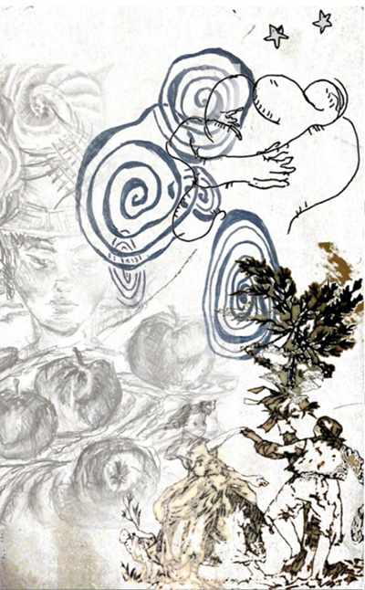
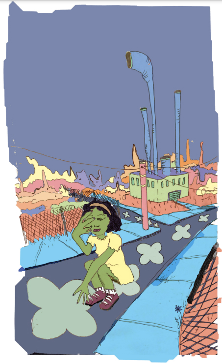
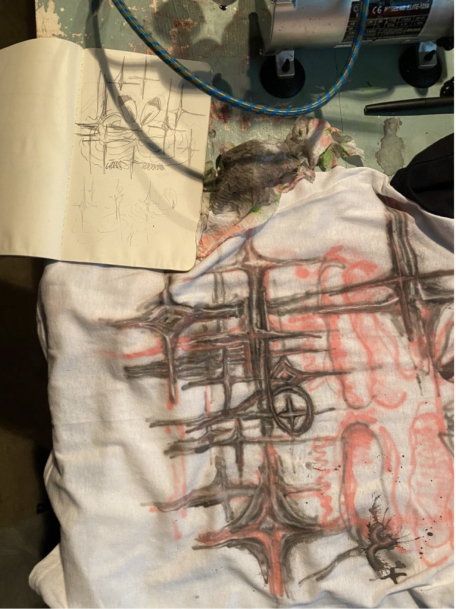
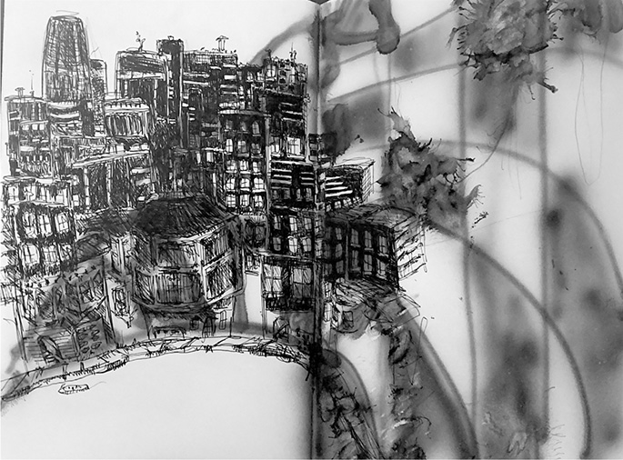
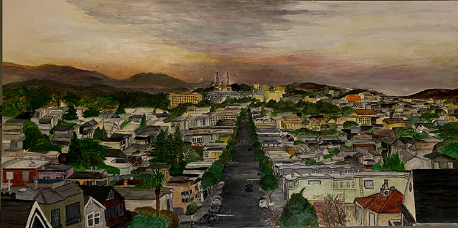
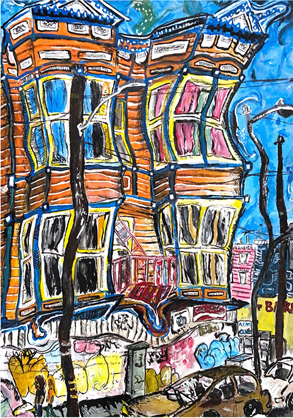
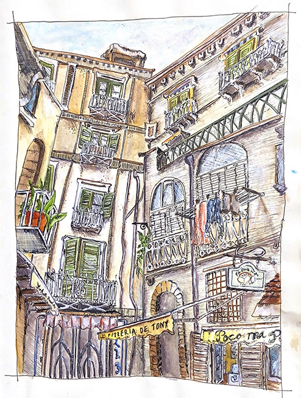
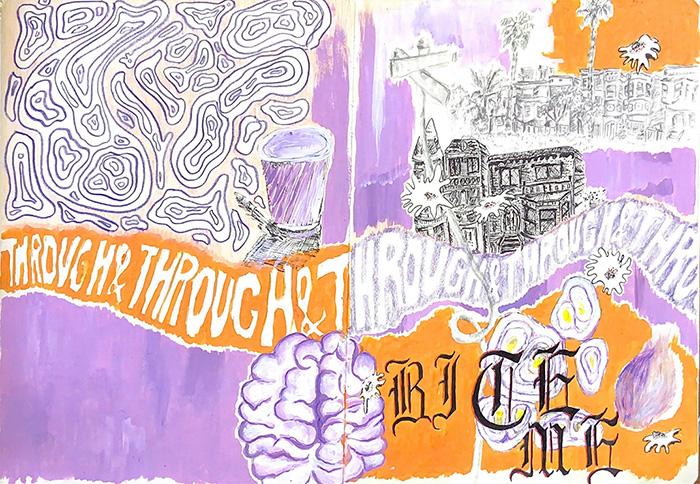
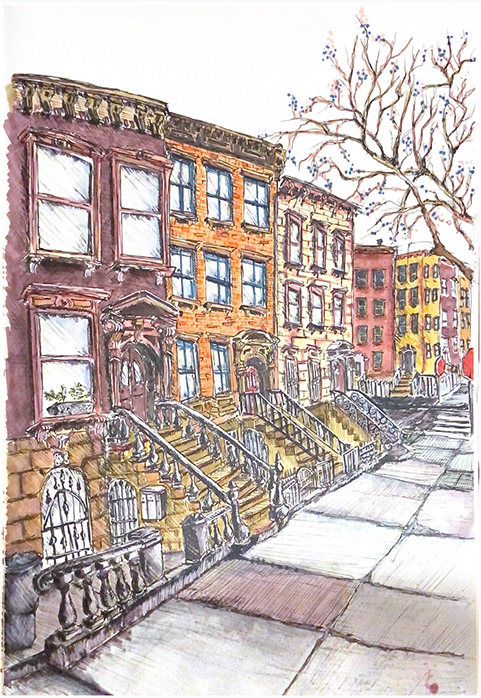

A collection of experimental photoshop-collaged drawings, airbrush designs, and digital illustrations.

Untitled
June, 2023
Photoshop, ballpoint pen, photo of my tattoo

Purple Girl
April, 2023
Adobe Illustrator, Ballpoint pen

Experimental Airbrush
December, 2021
Airbrush machine, fabric paint, white cotton fabric

City Alive
February, 2023
Airbrush, ballpoint pen

McHale's View
June, 2020
Acrylic paint on canvas
A collection of pages from sketchbooks I have had over the years. These pieces hold connection to my ever-growing curiosity for the world around me.

It's It
San Francisco, September 2020
Gouache paint, ballpoint pen

Pizzeria de Tony
Amalfi Coast, June 2023
Watercolor, Micron pen, colored pencils

Bite Me
San Francisco, April 2023
Gouache paint, ballpoint pen, colored pencil, graphite pencil

Annabel's Street
Brooklyn, December 2022
Copic markers, Micron pen